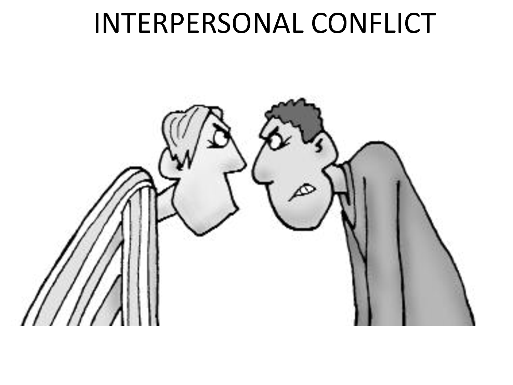
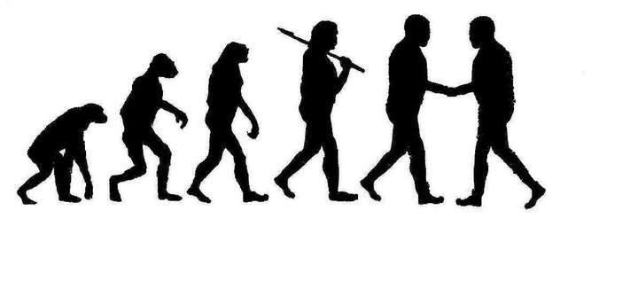

What Is a Conflict to Me?
The definition of conflict is: a serious disagreement or argument, typically a protracted one. This can mean a lot of different things to a lot of different people. To me, conflict is not the same as a disagreement, necessarily. A conflict can surely involve a disagreement but having a small disagreement doesn't automatically label a situation as a conflict. For example, to me disagreeing on political, religious, and other personal views can take place without conflict if there is a mutual sense of respect and an acceptance of differences by both parties. I think conflict arises when things are taken personal, misinterpreted, or when someone is just flat out being disrespectful. The problem with the latter is that there is room for interpretation but, ultimately, when one party in a situation feels wronged, regardless of what the any other party feels, there is a conflict. This can be something big like using drugs, having a baby or how you discipline your child. However, conflict can also arise from very small things such as someone's small quirky habbits, a small disagreement about anything, someone's Facebook status, or a simple misunderstanding.
Personal Experience With Conflict
In reflecting on personal experiences I had with conflict, a situation that comes to mind was related to my brother. The general situation entailed my brother asking for my assistance/advice about a business proposition and I was totally willing to assist him. However, when we finally found a time to sit down and talk about it with him, myself and his friend, my questions inquiring about what the current status was and other logistical questions was met with harsh responses. My understanding of the situation was that my brother felt threatened by what, and maybe how, I was asking him about the business, especially in front of a friend.
I initially tried to stay calm but my emotions got the best of me and I responded harshly in the end. This obviously didn't help the situation, regardless if I felt that I had merit to do so because of his own actions. I think understanding what his reaction was really about, in retrospect, helped us ultimately come to a resolution and I addressed my issues with how he acted towards me in that situation. His insecurities related to me being his little brother all fall under some type of sibling rivalry which is a very typical source of conflict.
As I think back to this moment, if I could go back with the knowledge I have now, I know things would have played out a lot differently. For one, I would know that I would need to either have this conversation with him and me privately, or I would be much more careful and strategic on how I articulate anything. But, its important to realize what he did wrong as well and I would hope that if he was able to go back, he'd be able to realize that my intentions were good and I never meant to demean him or talk down to him. Ultimately, in a general way, what I learned from this situation is that when you are ever surprised by someone's reaction and they seem to be very offended, its probably more than likely due to a misunderstanding on your or the other party's part. Being able to recognize that initially before coming too emotionally invested would be an extremely valuable lesson and skill to learn. This would also improve your overall emotional intelligence which you can take with you and use where ever you might go.